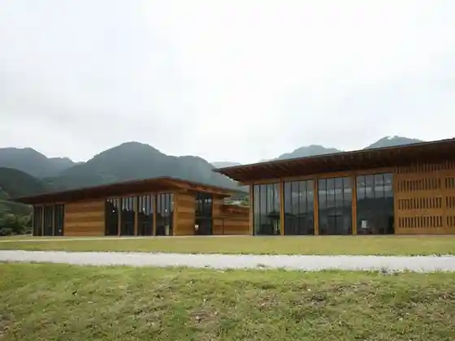
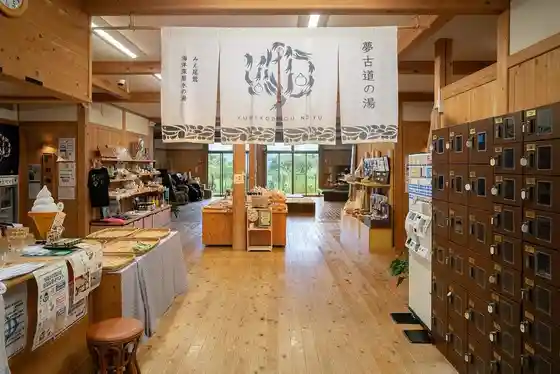
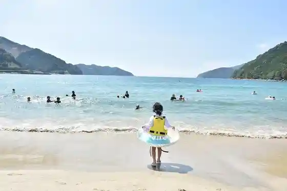
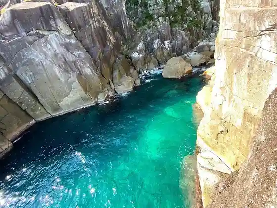

Mie Prefectural Kumano Kodo Center
Owase, Mie · 0597-25-2666 · Official / source link

Yume Kodo Owase Yume Kodo Baths
Owase, Mie · 0597-22-1124 · Official / source link

Miki Sato Beach
Owase, Mie · 0597-23-8223 · Official / source link

Ohai
Owase, Mie · 0597-23-8261 · Official / source link

Owase Sone Town no Murasakiontsutsuji (Shiroyama Park Jo no Shiro (Sone Castle Ruins))
Owase, Mie · 0597-23-8261 · Official / source link
Owase Ritsu Tenmon Science Museum
Owase, Mie · 0597-23-0525 · Official / source link
Sone Castle Ruins (Shiroyama Park)
Owase, Mie · 0597-23-8261 · Official / source link
Kuki Jinja Juso
Owase, Mie · 0597-23-8223 · Official / source link
Owase Shrine
Owase, Mie · 0597-22-1486 · Official / source link
Kuki Saki Juso
Owase, Mie · 0597-23-8223 · Official / source link
Owase Kanko Bussan Kyokai
Owase, Mie · 0597-23-8261 · Official / source link
Tenma So
Owase, Mie · 0597-22-7880 · Official / source link
Kuchisubo Dam
Owase, Mie · Official / source link
Hachi Oniyama Koe (Kumano Kodo Ise Michi)
Owase, Mie · 0597-89-6172 · Official / source link
Kaisen Babekyu Hamayaki Ki Ya
Owase, Mie · 080-2080-3080 · Official / source link
Tsuchii Chikurin
Owase, Mie · 0597-23-8261 · Official / source link
Oku Kumano Taikan Gaido
Owase, Mie · 080-3648-5499 · Official / source link
GoldenEagle
Owase, Mie · 090-3287-2843 · Official / source link
Yugengaisha Domo
Owase, Mie · 0597-25-2282 · Official / source link
Kuma no Experience Kikaku
Owase, Mie · 090-7865-0771 · Official / source link
Misakitoiigumi
Owase, Mie · 090-4196-5062 · Official / source link
Kaji Ga Daibingusabisu
Owase, Mie · 080-4547-4699 · Official / source link
Naka Village Yama Park
Owase, Mie · 0597-23-8261 · Official / source link
Miki Toge Ugo Toge (Kumano Kodo Ise Michi)
Owase, Mie · 0597-89-6172 · Official / source link
Sone Jiro Saka Taro Saka (Kumano Kodo Ise Michi)
Owase, Mie · 0597-89-6172 · Official / source link
Umakoshi Fudo Taki Umakoshi Fudo Mikoto
Owase, Mie · 0597-23-8261 · Official / source link
Owase Shrine no Dai Kusu
Owase, Mie · 0597-23-8223 · Official / source link
Umakoshi Park
Owase, Mie · 0597-23-8261 · Official / source link
Owase Osone Ura Park (Sekai no Tsubaki Sono)
Owase, Mie · Official / source link
Akuasuteshon
Owase, Mie · 0597-27-8080 · Official / source link
Mie Prefectural Kumano Kodo Center Experience Kyoshitsu
Owase, Mie · 0597-25-2666 · Official / source link
Asuka Jinja Juso
Owase, Mie · 0597-23-8223 · Official / source link
Onaso Hana
Owase, Mie · 0597-23-8261 · Official / source link
Nirakura Saijo
Owase, Mie · 0597-23-8261 · Official / source link
Miki Sato Yacho no Komichi
Owase, Mie · 0597-23-8223 · Official / source link
Hachi Oniyama (Kenko Toyutori Forest)
Owase, Mie · 0597-23-8261 · Official / source link